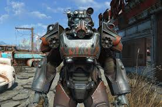

<
Mikes game page
Ive played games almost my whole life starting with an old super Nintendo I
didn't know how to use mainly watching my older brother playing games that
I don't even remember the names of but I still enjoyed every second of it.
After the Nintendo broke my dad bought us our PS2 and I actually started
playing games and like GTA San Andreas, Twisted Metal Black, Maximo ghosts
to glory, the prince of Persia, god of war, and many other games I still
love that really got me to love gaming as my favorite hobby. I never got a
PS3 or Xbox360 I went right to PS4 and started playing GTA5 and The last
of us which both came with my console when I bought it and spent a while
floating from single player game to single player game some bad some good
until I got into online gaming with games like battlefield, rainbow six
siege, GTA online, some cod games and more but siege has been my main online
game for a while now grinding away at ranked for hours with friends.
currently most of the people play with are ether moving to PC or don't
play often.
Red Dead Redemption 2

Red Dead 2 is the prequel to the smash hit by rock star games Red Dead
Redemption with a compelling story about a retired outlaw John Marston with
a family who gets forced to out and even hunt down old friends because of
a group of law men, but Red Dead 2 is about the origin of the gang John
comes from and the downfall of it from the perspective of Arthur Morgan a
member of Dutch Van Der Linde gang (the same gang john joined) as they run
from the law after a robbery gone wrong, they head into the mountains in
the beginning of the game. The game is beautiful and detailed to the point
where it not hard to mistake screen shot for actual pictures I would have
to say it is the most impressive looking game I have ever seen by a good
margin along with a very compelling story and likable characters the only
complaint I can think of would be the Combat is nothing new or special
but it’s a forgettable complaint when everything else is breath taking and
extremely appealing.


Apex Legends

Apex Legends was released on February 4, 2019 over taking fortnight for the
time being the most popular game of the category very quickly and becoming
very popular off launch with millions of players. I started playing almost
immediately after it was released with my friend Jake for about a month or two
becoming pretty good racking up to 11 wins in a row and 24 kills in a match.
As Apex is mostly a standalone but does take place in the titan fall universe
even though that fact can be ignored for either game but it’s still a notable
fact.


Minecraft/

I have played Minecraft for a considerable amount of time (hundreds of
hours) playing Minecraft since I was a kid back in 2013 until now that I’m a
big kid in 2019 spending most of my time in 1 single survival world making
massive structures and stupid things and having a blast. Minecraft was made in
May 17, 2009 coded using java by a guy named notch and was a small indie game
when it started and slowly at first gained a fan base for a while until it
finally picked up steam and became popular, after worlds bought up by
Microsoft and continued after words.
Maximo Ghosts To Glory
Maximo was one of the very first games to stoke my interest in gaming as a hobby
that got me to start trying out this hobby of mine that has taken a sizable
chunk of brain and gave me something to be excited about after a long day of
school I remember cutting skeletons and ghosts in half jumping over purple skulls
and saving my shield charge to defeat the first boss (btw you want to get the
golden shield and save all hit point until you get to the giant boss and hit
him 3 times with it before attacking with your sword) as well as so main
strategies and where my game stopped (my disk was scratched so I never got passed
the ice boss) fondly loving every agonizing defeat and glory’s triumph. I don’t
remember much of the story who made the game or anything of that sort but it
wasn’t about that for me I loved playing that game getting as far as possible
repeatedly playing it for the fun of the game not for who made it and
not a crazy story but for the fun of it and just enjoy myself.
Fallout 4
When fallout 4 came out I was excited I had watched all the trailers and
watched the e3 conference, then I received the game and it was better than I had
expected mainly because of the building and customization the only complaint
other than bugs I have on hand is there is no powder gang.

Aidan's Favorite Games
Different Ways To Game
Home
How Games Affect You
Mike's Favorite Games